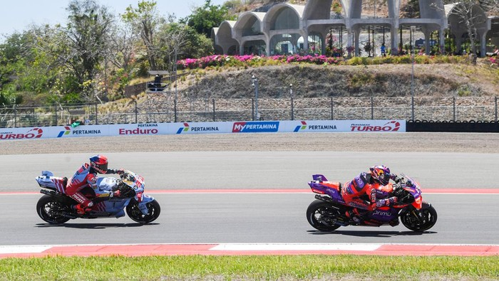

Strategi MGPA Agar MotoGP Mandalika 2025 Lebih Ramai
Purwakarta - AboutNEWS-- Mandalika Grand Prix Association (MGPA) sebagai pengelola sirkuit Mandalika ingin MotoGP Mandalika 2025 lebih ramai dari sebelumnya. Berbagai cara pun dilakukan demi menyukseskan misi itu. Mandalika sudah menggelar balapan kelas primer itu sejak 2022. Pada musim debutnya, Mandalika menyedot penonton 102.801 orang, lalu berlanjut 102.929 orang di 2023, dan 120.000 orang musim lalu. Total penonton musim lalu jadi rekor untuk MotoGP Indonesia. Namun, jumlah itu masih jauh dari kapasitas full Sirkuit Mandalika yang mencapai 190 ribu tempat duduk. Apalagi menurut catatan Crash, jumlah penonton di hari Minggu atau Race Day "cuma" mencapai 60.709 penonton. Sementara di hari Sabtu yang diisi kualifikasi dan Sprint Race hanya 46.481 penonton.
Hal ini tentu bikin MGPA selaku operator sirkuit harus memutar otak mencari cara agar bisa menarik lebih banyak penonton saat MotoGP Mandalika 2025 digelar 5 Oktober. Sebab harus diakui tingginya biaya transportasi dan akomodasi masih jadi masalah utamanya. Alhasil, calon penonton harus berpikir dua-tiga kali sebelum membeli tiket MotoGP Mandalika. Salah satu cara yang akan dilakukan MGPA adalah dengan memodifikasi klasifikasi tiket, dengan memasukkan kategori baru yakni Middle Class Hospitality. "Untuk tahun ini kami rencananya akan mengatur kembali, pertama ticketing pricing strategy, kenapa begitu? dari sisi kemampuan untuk daya dukung akomodasi, maksimal 30 ribu. Untuk tahun ini ada 40 ribu yang bisa diakomodir di kota Lombok, Nusa Tenggara Barat, dengan jarak tempuh ke sirkuit kurang dari dua jam," ujar Direktur Teknik dan Operasi MGPA Samsul Purba menjawab pertanyaan detikSport dalam acara Media Gathering di AMALFI Ristorante Italiano, Jakarta, Jumat (27/12/2024) sore WIB. "Artinya apa? Dengan target penonton harian 70 ribu, kita masih kekurangan penonton 40 ribu jika memang penonton full 30 ribu datang dari luar lombok. kita atur kembali ticketing strategy, untuk masyarakat lokal membeli lebih banyak tiket MotoGP Mandalika. Masyarakat dari luar Lombok merasa nyaman untuk datang ke sini, kita siapkan pake semi hospitality dengan harga yang lebih terjangkau," sambungnya. Direktur MGPA Priandhi Satria (kanan) dan Direktur Teknik dan Operasi MGPA Samsul Purba (kiri) dalam MGPA Media Gathering, Jumat (27/12/2024) sore WIB.Direktur MGPA Priandhi Satria (kanan) dan Direktur Teknik dan Operasi MGPA Samsul Purba (kiri) dalam MGPA Media Gathering, Jumat (27/12/2024) sore WIB. (Foto: dok.MGPA) Jika selama ini Tiket Royal VIP Box dijual dengan harga Rp 15-25 juta, maka MGPA akan coba memberikan harga Rp 3,5-5 juta untuk tiket Middle Class Hospitality dengan fasilitas yang tentunya berbeda. Diharapkan ini bisa menaikkan jumlah penonton di kelas tersebut agar bisa membantu subsidi silang tiket untuk Grand Stand dan General Admission. "Makanya kita akan perbanyak middle hospitality. Ini pakai sistem subsidi silang. Kita berharap dengan banyaknya penonton ke Middle Class Hospitality, maka harga tiket Grandstand Beratap bisa kita maksimalkan hanya Rp 500 ribu, yang tidak beratap Rp 200 ribu," papar Samsul.
Selain tiket nonton MotoGP, transportasi dan akomodasi juga jadi perhatian serius MGPA. Mereka akan mengadakan pembicaraan lebih lanjut dengan Pemerintah NTB demi menurunkan harga dua komponen tersebut. "Jadi kan MGPA, ITDC sebagai holding tidak bisa berdiri sendiri. Kami berencana menemui pak Gubernur yang baru dilantik, bicara dengan beliau, gimana untuk dukungan yang bisa diberikan oleh pemerintah daerah. Karena yang paling banyak mendapatkan untung dari MotoGP Mandalika adalah Pemprov NTB. Maka hal pertama yang kami lakukan diskusi dengan gubernur terpilih, apa yang harus kami lakukan bersama-sama. Harapan kami bisa saja subsidi tiket pesawat selama MotoGP umpamanya," ungkap Samsul. MGPA Media DaySuasana MGPA Media Gathering, Jumat (27/12/2024) sore WIB. "Kemudian mengendalikan harga akomodasi, terutama harga hotel dan sewa mobil di NTB. Karena dua hal ini yang paling sulit dikendalikan selama ini." Sementara itu, Direktur Utama MGPA Priandhi Satria berharap harga tiket, akomodasi, dan transportasi benar-benar bisa diturunkan agar bisa menarik lebih banyak penonton. "Kami berharap tahun ini, Saya dan Pak Samsul, dengan ITDC tentunya, jungkir balik, untuk bisa menurunkan sebanyak mungkin biaya tersebut (operasional). Tentunya kalau biaya itu turun, harga tiket bisa turunkan, pengeluaran kita bisa turunkan semua," ungkap pria yang akrab disapa Andi tersebut. "Utamanya di biaya hotel dan transportasi, sewa mobil, sewa kendaraan. Mandalika, MotoGP seperti itu, kami akan berusaha mengurangi biaya itu, agar biaya tiket turun." Baca artikel AboutNEWS, "Strategi MGPA Agar MotoGP Mandalika 2025 Lebih Ramai".